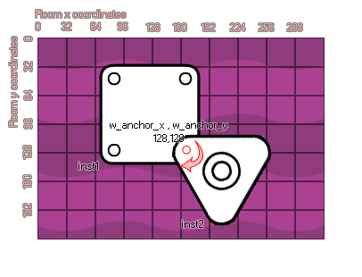

physics_joint_revolute_create(inst1, inst2, w_anchor_x, w_anchor_y, ang_min_limt, ang_max_limit, ang_limit, max_motor_torque, motor_speed, motor, col)
| Argument | Description |
|---|---|
| inst1 | The first instance to connect with the joint |
| inst2 | The second instance to connect with the joint |
| w_anchor_x | The x coordinate for the joint, within the game world |
| w_anchor_y | The y coordinate for the joint, within the game world |
| ang_min_limit | The lower permitted limit for the joint angle |
| ang_max_limit | The upper permitted limit for the joint angle |
| ang_limit | Whether the to limit the angle of the joint (true) or not (false) |
| max_motor_torque | Sets the maximum angular momentum for the motor |
| motor_speed | This is the speed at which the motor should rotate |
| motor | Whether the motor should be active (true) or not (false) |
| col | Whether the two instances can collide (true) or not (false) |
Returns : index of the joint
A revolute joint forces two bodies to share a common anchor point (often called a hinge point) and the joint has a single degree of freedom - the relative rotation of the two bodies around this point. To specify
a revolute you need to provide two instances and a single anchor point in the room, as you can see in the image provided:

If you look at the image, you can see that the two instances have been created to over-lap and at the point where they are touching, we have defined a revolute joint. Now, this joint can be limited in its freedom of
rotation thanks to the "ang_min_limit" and "ang_max_limit" values. How does this work? Well, lets look at another image:
As you can see, angles in the physics world are not the same as the standard GameMaker:Studio angles where right is 0 degrees and then it goes anti-clockwise so that up is 90, left is
180, and down is 270. No, when dealing with the revolute joint, the 0 degrees axis runs from the joint position to the origin of the second instance defined by the function and the angles are then calculated in a
clockwise direction. If you switch on angle limiting, the limits are defined as being relative to this 0 degree axis and the limit range should include zero, otherwise the joint will lurch when the room begins.
Finally, you can define the joint as having a motor or not. This means that when uninfluenced by a collision the joint will move in a direction, which is defined by the motor speed with a positive number being
clockwise and a negative number being anti-clockwise. The "max_motor_torque" argument is for limiting the speed of the rotation so that you don't get a perpetually accelerating motor and to limit the influence
that a collision may have on the rotation. In this way you can use a joint motor to simulate joint friction by setting joint speed to zero and maximum torque to some small, but significant value. The motor will try
to prevent the joint from rotating, but will yield to a significant load.
As with all the joints, if you set the "col" value to true then the two instances can interact and collide with each other but only if they have collision events, however if it is set to false,
they will not collide no matter what.
var mainFixture, o_id;
mainFixture = physics_create_fixture();
physics_fixture_set_circle_shape(mainFixture, sprite_get_width(sprite_index) / 2);
o_id=instance_create(x+25, y, obj_Door);
physics_fixture_bind(id, mainFixture);
physics_fixture_bind(o_id, mainFixture);
physics_joint_revolute_create(id, o_id, x+25, y, -90, 90, 1, 0, 0, 0, 0);
physics_fixture_delete(mainFixture);
The above code creates and defines a new fixture and then creates an instance of "obj_Door", binding the created fixture to the two new objects. They are then joined by a revolute joint with no motor and the angles limited to a +/- 90 degree swing. Finally the fixture is deleted as it is no longer needed.